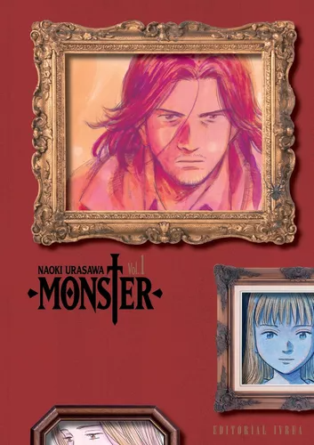
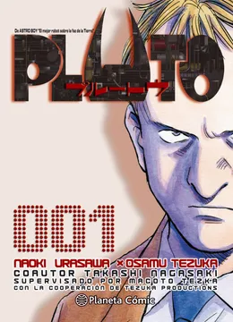

| Obras/Mangas | Fecha de salida | Volúmenes y capitulos | Portadas |
|---|---|---|---|
| Monster | Diciembre 1994 | 18 Volúmenes / 162 Capítulos |  |
| 20th Century Boys | Octubre 1999 | 22 Volúmenes / 162 Capítulos | 
|
| Pluto | Septiembre 2003 | 8 Volúmenes / 65 Capítulos |  |
| 21st Century Boys | julio 2006 | 2 Volúmenes / 16 Capítulos |  |
| Billy Bat | Octubre 2008 | 20 Volúmenes / 165 Capítulos |  |